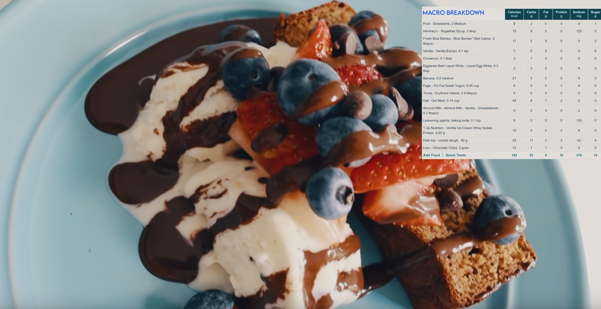

Banana Bread
Pernilla Stryker

Description
This is a recipe for some banana bread that is both lower in calories and higer in protein than "normal" banana bread. Pernilla Stryker came up with this recipe and I am just using it for this assignment.
Ingredients
- 2 medium (100g) ripe bananas
- 3 tbsp (46g) egg whites
- 1.5 cups (120g) Oat flour
- 1.5 scoops (46g) Protein Powder
- 1/2 cup 0% fat greek yogure
- 1 tsp Cinnamon
- 1 tsp baking soda
- 1 tsp vanilla extract
- 2 tbsp stevia or other 0 cal sweetener
- 2 tsp milk
Steps
- Mix all dry ingredients together in a bowl
- Mix all wet ingredients in a separate bowl
- While stiring, slowly pour the dry ingredients into the wet ingredients
- Line a baking pan with parchment paper and put the mix into the pan
- Bake at 350 degrees for 30-40 minutes
Home